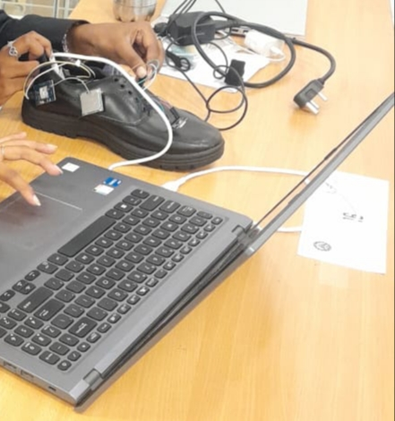
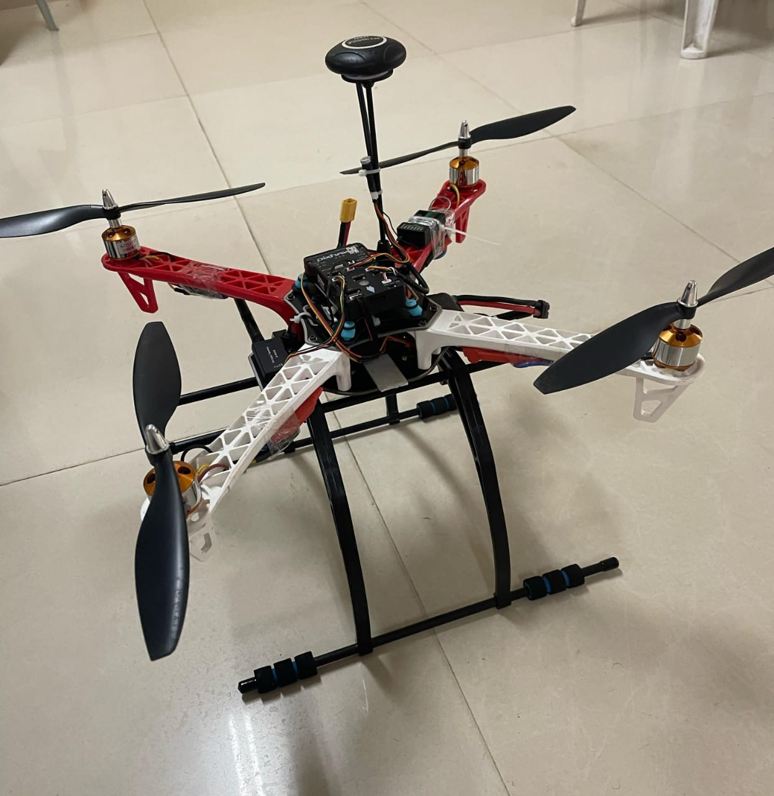

About Me
I’m an enthusiastic embedded systems developer and IoT enthusiast who loves creating real-time, efficient, and impactful projects. My strengths lie in prototyping smart safety and healthcare systems. I enjoy participating in hackathons and collaborating with peers to solve real-world problems using technology. I have built systems like wearable emergency shoes, drones for medical logistics, and smart home devices.
Projects
Smart Safety Shoe
This project is a smart wearable safety shoe designed for workers and women. It uses IoT sensors to detect accidents, track location, and send emergency alerts in real time via Wi-Fi or GSM. Built with ESP8266, GPS, and sound sensors.
View ProjectDrone for Medical Delivery
This autonomous drone is built for organ and medicine transport between hospitals. It includes GPS tracking, weather adaptability, and power management. The drone provides fast, contactless delivery in emergencies, especially in remote areas.
View ProjectContact
Email: madhuvahini6@gmail.com